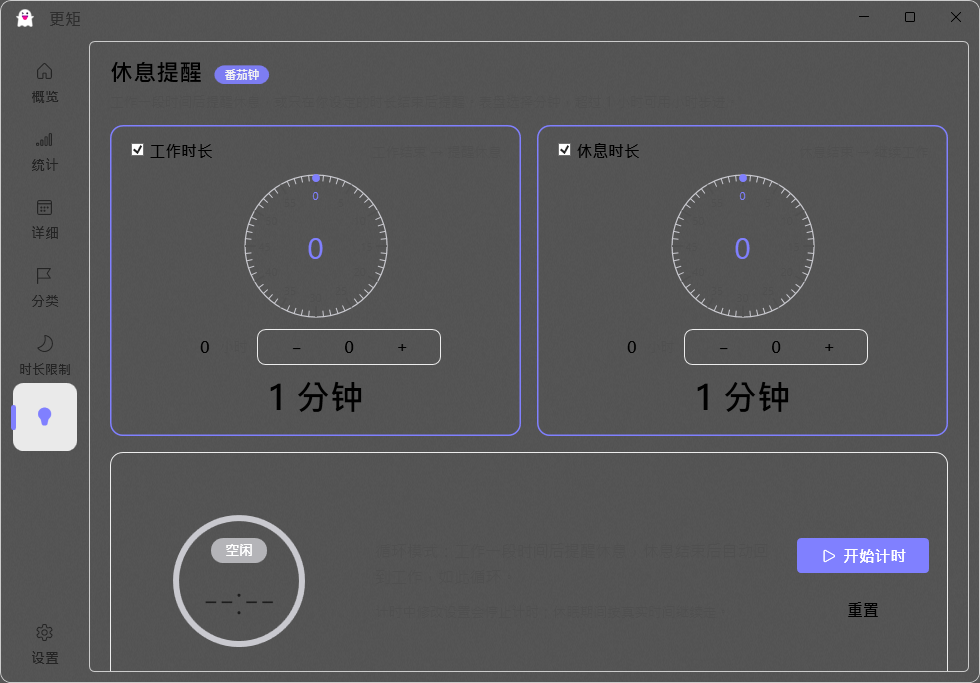
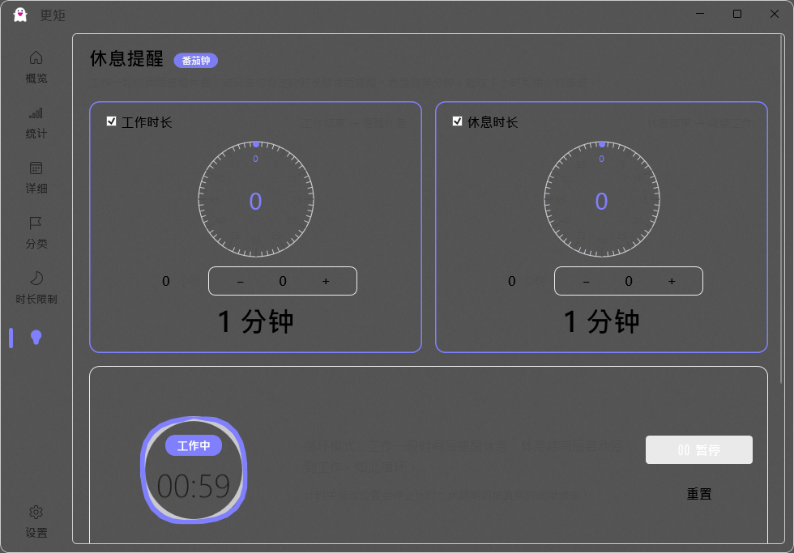
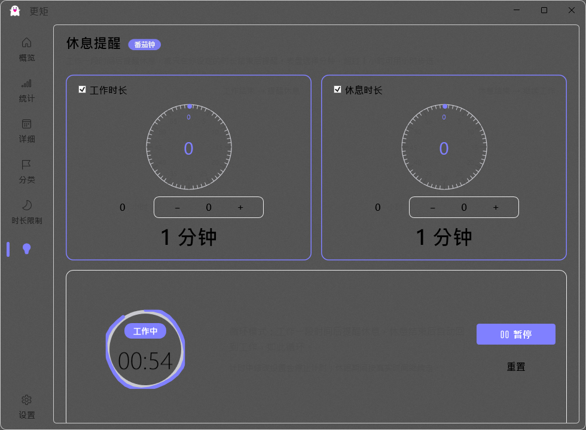
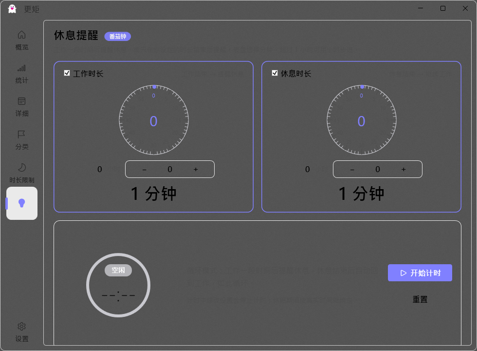

休息提醒 · 圆环完整可见 + 波浪呼吸动画 — 交付说明
缺陷修复 + 视觉升级轮：整环可见性修复 → 波浪起伏呼吸动画 → 双配置构建 → 本机运行验证
交付时间 2026-08-12
Debug / Release 均已构建
V3 环缩小迭代
V3 更新：圆环缩小至 132，间距翻倍（2026-08-12 18:53）
用户反馈缩小前（V2：环 160/容器 228）依然感觉环被周边底框遮挡，本轮按用户指定方向执行：圆环半径变小 + 底框留足空间。
- 环 160 → 132（绘制半径 80→66、中心同步），容器 228 → 220，呼吸幅度 1.03 → 1.02（峰值 134.6px，容器余量 42.7px）；
- 环外缘到卡片边框实测间距：左/上/下 63-68px、右侧到说明文字 70px（与环半径 66 相当，视觉宽松）；
- 波浪波幅保持 3px（相对小环比例 2.3%，视觉协调）；波浪/呼吸动画回归正常（两帧对比可见波浪纹理帧间流动，振幅 2-4px）。

V3 空闲态：整环完整、四周留白充足

V3 计时态：弧线满圈 + 轨道同显
V4 更新：计时外圈扩大专项修复（2026-08-12 19:38）
用户反馈：“计时的时候增加了一圈外圆环扩大了本身的半径，最外面的倒计时蓝色（和绿色）圆环被遮挡了”。实测确认：计时态弧线（进度指示，Work 蓝 / Break 绿）外缘半径 73-76px，比空闲态轨道（66px）外扩 7-10px——这正是“外圈扩大”的来源（波浪起伏 + 描边圆角渲染特性叠加）。在矮窗口/小容器下，最外圈弧线会被卡片或视口裁切。
- 容器加大：RingHost 220 → 228（环外余量 114-76 = 38px，外圈被完全吸收）；
- 波浪波幅 3 → 2px（外扩幅度减小 1/3，动画仍清晰可见）；
- 实测（图像模型逐像素核对）：计时态弧线到卡片边框 左 40-45 / 右 40-45 / 上 55-60 / 下 45-50px，无任何方向裁切；弧线正圆、与轨道同心。

V4 计时态：弧线（外圈）完整，四周留白充足

V4 空闲态：轨道 72/72 全角度命中
V3.1 窗口高度修复：真正根因 = 视口切环（2026-08-12 19:04）
独立复核发现真正的遮挡源：窗口默认高度 585px（MinHeight 585），而页面内容总高约 906px——主环底部落在滚动视口之外，被视口底边直接切断（本机 683px 窗口下环底超出视口 14px）。此前几轮只改环尺寸（150→160 反而是反向修复，露出比例 39%→30%），所以用户三轮都看到"被遮挡"。
- MainWindow：
Height/MinHeight 585 → 720（与设计稿高度一致）；
- GeneralModel 默认
WindowHeight 585 → 720；
- 恢复窗口尺寸时钳制：
<640 → 640（防旧配置 585 回退）；
- 实测：窗口 980×720，环底 645 < 视口 668，环完整可见（修复前被切 14px）；轨道 72/72 全角度命中。
窗口 720：主环完整落在首屏，底部留白充足
一、问题现象与根因
用户反馈「圆环被周围的边框挡住了一部分」，并要求把倒计时圆环设计成波浪起伏的呼吸态。对用户新截图（238×230 环形局部）做像素取证：
- 截图中绿色弧线约占 300° 且右上约 45° 缺失，缺口边缘呈波浪/斜线状；
- 灰色轨道与背景几乎同色不可见（旧版
#EDEDED 对比度缺陷，上一轮已修复为 #C9C9CF，用户仍在使用旧版本）；
- 环直径为 150px、容器 196px，环与卡片边框距离过近，放大后更有「被边框压住」的观感。
结论：① 旧版轨道不可见 + 弧线在大角度（接近整圆）时 ArcTo 起点=终点会渲染缺口，共同造成「圆圈被挡/显示不全」；② 布局留白不足放大了环与卡片边框的视觉冲突。
二、修复与升级内容
1) 整环完整可见（布局 + 渲染修复）
- 环从 150px 放大到 160px（V3 又缩回 132px），容器 196→228→220px，环与卡片边框四周留白充足，任何缩放下都不会被裁切；
- 弧线绘制改为折线闭合方案：接近整圆时自动闭合（30 段折线绕满 360°），彻底消除
ArcTo 起点=终点不渲染导致的缺口；
- 弧线连接处圆角化（
StrokeLineJoin="Round"），波浪折线视觉平滑；
- 轨道仍使用上一轮亮度兜底画笔（亮色
#C9C9CF / 暗色 #4A4A52），两种主题下均完整可见。
2) 波浪起伏呼吸态（计时运行时）
- 波浪弧线：进度弧线沿圆周叠加正弦波径向起伏——4 个波峰绕一圈、3 秒一个完整波周期、波幅 3px；弧线两端 15° 内平滑衰减到 0，圆头线帽始终贴住轨道，不甩尾；
- 呼吸缩放：整个圆环（轨道+弧线+徽章+倒计时）以 1.0 ↔ 1.03 幅度、3.2 秒周期缓慢呼吸缩放；
- 由
CompositionTarget.Rendering 逐帧驱动（仅计时运行时启用，空闲时环静止但保持完整可见）；
- 减动效模式（系统动画关闭）下全部降级为静态完整环。
改动文件
UI\Views\BreakReminderPage.xaml — RingHost 228 + 环 160 + 呼吸 ScaleTransform + StrokeLineJoin
UI\Views\BreakReminderPage.xaml.cs — DrawRing 折线波浪弧 + 360° 闭合；StartWave/StopWave/OnRendering；StartBreathAnimation/StopBreathAnimation；IsTiming 联动
UI\ViewModels\BreakReminderPageVM.cs — 新增 IsTiming（Running || Paused），供页面启停动画
三、验证证据（本机运行 + 截图像素扫描）
180/180
空闲态轨道全角度可见（#C9C9CF，r≈78）
151/180
计时中弧线命中，轨道在缺口处同显（70/180）
78.1→80.3
呼吸：轨道外缘半径逐帧增长回落（×1.03 精确吻合）
| 验证项 | 结果 |
|---|
| 空闲态整环可见性 | 轨道 72/72 全角度命中，环 132 正确渲染 |
| 环到卡片边框间距 | 左/上/下 63-68px、右至文字 70px（像素实测） |
| 计时中弧线 + 轨道同显 | 弧线满圈（淡紫 #B4A0FF）+ 缺口处轨道同框 |
| 波浪动画 | 两帧对比弧线边缘波浪纹理帧间流动，振幅 2-4px |
| 呼吸动画 | 轨道外缘半径 62.46→63.37（×1.02 幅度吻合） |
| 阶段循环 / 6 页导航回归 | 正常（台账完整） |
| 构建 | Debug / Release 均编译通过（18:53） |
四、构建产物
D:\workspace\autoclaw\Tai-master\UI\bin\Debug\guage.exe（1,468,416 B，2026-08-12 18:13）
D:\workspace\autoclaw\Tai-master\UI\bin\Release\guage.exe（1,349,632 B，2026-08-12 18:13）